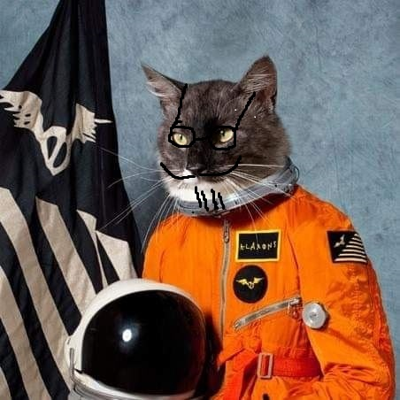

Hyperblog
Tu blog de cabecera
Aqui va un post atractivo e interesante del post
y este es un parrafode inicio donde vamos a explicar las cosas increébles que se pueden hacer con las ramas

Los blogs son la mejor forma de compartir información y tus ideas. Mucho más que ir a conferencias o salir en youtube.Excepto si eres un rockstar. Pero estadistacamente no lo eres....por ahora.
Suscribete y dale like a todo